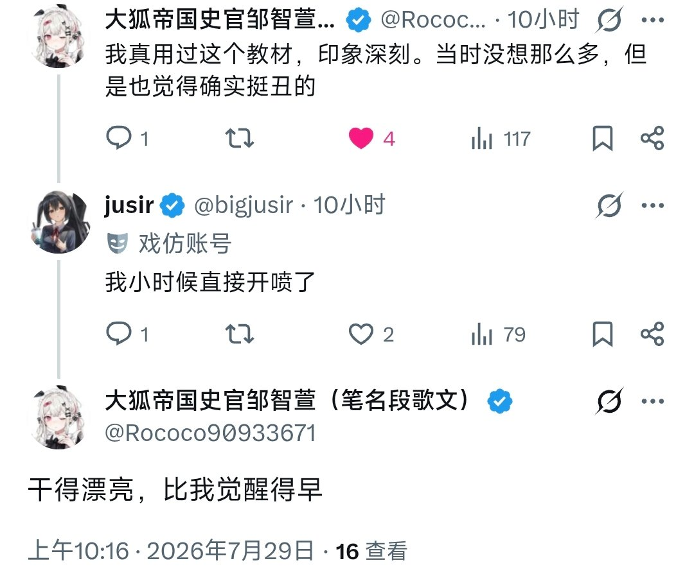

大狐帝国史官邹智萱（笔名段歌文）
@Rococo90933671
@bigjusir 我的意思是，你感觉到不对了，但是我没觉得有什么不对，顶多就是在审美上有一点朦胧的不适感，甚至还不明显

jusir
@bigjusir
jusir不太支持“觉醒”这个说法
jusir认为人的认知会随着人所处环境，教育和时代发展的变化而变化。
龙场悟道不过是厚积薄发的过程，觉醒也是人的认知走向下一个阶段罢了https://t.co/uS0WUDEOrw https://t.co/4iRAnFSmGq